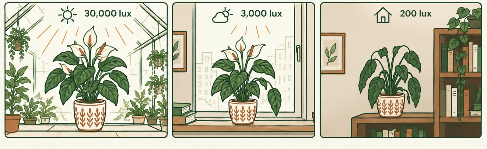
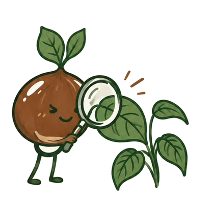

How much light your plant had at the nursery — and how much of it reaches it in your apartment:
approx. 30,000 lx
Greenhouse
where it grew up
approx. 3,000 lx
Bright window
at your home
approx. 800 lx
1 metre further
into the room
approx. 200 lx
Middle of the room
the shelf, the dresser
Your plant spent its entire life so far in the first bar. The day you took it home, it moved to the second — or the fourth. That is the most common reason plants give up after purchase.
Approximate values. Actual readings vary considerably with season, orientation and window size.
Send us a photo of your plant. We’ll take a look and tell you what’s going on. Free of charge.
What’s behind it
The gap between nursery and apartment is bigger than it feels. Our eyes compensate for it — plants can’t.
Commercial growers cultivate plants to be in full bloom at the moment of sale — under ideal light, warmth and feeding. At home those conditions are gone, and the plant switches to survival mode: the existing flowers finish, and no new buds appear for a while. That is normal and not a bad sign.
Viennese apartments in winter are drier than almost any climate these plants come from.
The most common mistake isn’t too little water but too much — usually out of concern.
Almost all of this can be fixed once you know what the cause is. And given the right conditions, most of these plants will flower again — it just rarely happens on its own.
What we’re building
Kastanie is just getting started. From this winter, we arrange plant check-ups at your home: someone looks at your plants, works out what they’re missing, repots where needed, and tells you what to do.
The work is done by Viennese nurseries — businesses that have been doing this for decades. We organise and arrange. The gardening is done by professionals.
We’re starting small: a few partner businesses, a few districts. Hence the waiting list.
Available now, free — and staying free

Send a photo of your plant to hallo@kastanie.wien. Briefly add where it stands, how often you water, and how long the problem has existed.
Within 48 hours (on working days) you’ll get an assessment: what your plant is most likely missing and what you can concretely do.
No sales pitch. No invoice. No sign-up required.
One photo per request, please — that way we can give everyone a proper answer.
Deutsch Wir antworten selbstverständlich auch auf Deutsch — schicken Sie Ihr Foto einfach an dieselbe Adresse.
Waiting list
No newsletter, no advertising. One email when we launch.
Who’s behind this
I live in Vienna and I’m building Kastanie — alongside my day job, step by step.
The idea came from a conversation I keep having: someone buys a plant, it looks great for two weeks, then goes downhill — and they conclude they’re just not good at this. Yet Vienna has outstanding nurseries that could solve exactly this. It simply doesn’t occur to anyone to invite them home.
I’m not a gardener myself. The work on your plants is done by trained Viennese businesses — and for tricky cases, I check with them before I answer you.